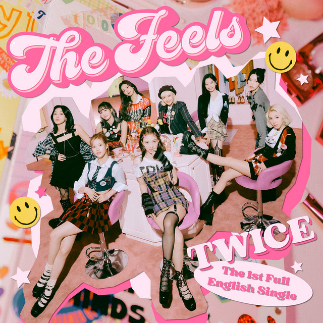
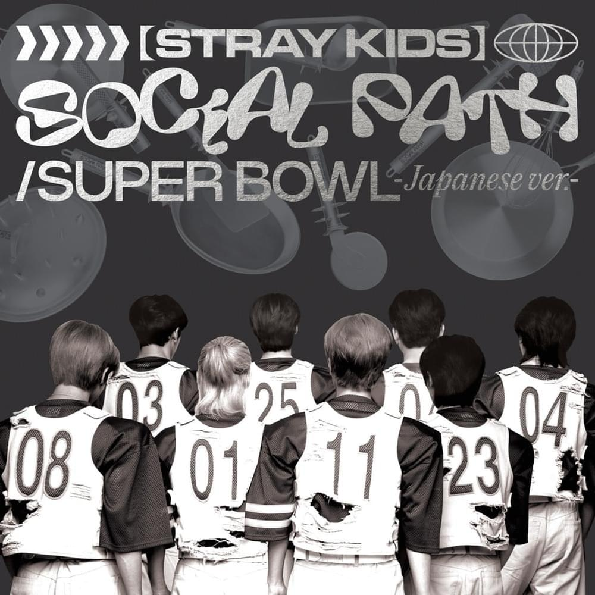

The Feels | Butterflies | Lover

Boy, I, boy, I, boy, I know
I know you got the feels
Boy, I, boy, I, boy, I know
Uh, I'm so curious
'Bout you, boy, wanna keep it cool
But I know every time you move, got me frozen
I get so shy, it's obvious (get ya)
Catching feels like butterflies
If I say what's on my mind
Would I hit bullseye? (Woo)
Shoot, I'm ready, aim and fire (fire)
Baby, I (whoa-oh, ow!) Feel like cupid's alive
Alive tonight ('night), yeah, tonight
If your heart beats the same way, let me know (you let me know)
'Cause I'm boom-boom-boom from head to toe, and I (yeah, head to toe)
I know, love, it is such a funny thing
A mystery allure, gotta get to know you more
'Cause I, I can feel a real connection
A supernatural attraction-ah
I got the feels for you, yeah, yeah, yeah, yeah
You have stolen my heart, oh, yeah
Never let it go, oh, oh, no
Never let it go, oh, oh, oh
Lightning straight to my heart, oh, yeah
I got all the feels for sure
Yeah, I got all the feels for ya, oh
Boy, I, boy, I, boy, I know
I know I got the feels
Boy, I, boy, I, boy, I know
I know you feel it too (uh, uh)
Sway in the moonlight, dance in the dark
I know that I caught your eye (your eye)
Are we on the same vibe? (Same vibe)
I wonder what's on your mind
'Cause you got me good and I wanna be ya boo
If it's dumb, well, I wanna be a fool (fool, fool, fool)
Underneath the neon lights, baby
Electricity tonight, baby
I know love it is such a funny thing
A mystery allure, gotta get to know you more
'Cause I, I can feel a real connection
A supernatural attraction-ah
I got the feels for you, yeah, yeah, yeah, yeah
You have stolen my heart, oh, yeah (oh, yeah)
Never let it go, oh, oh, no
Never let it go, oh, oh, oh
Lightning straight to my heart, oh, yeah
I got all the feels for sure
Yeah, I got all the feels for ya, oh
Boy, I, boy, I, boy, I know
I know I get the feels
Boy, I, boy, I, boy, I know
I know you feel it too
Boy, I, boy, I, boy, I know
I know I get the feels
Boy, I, boy, I, boy, I know
I know you feel it too (feel it too)
You got my attention, so what's your intention?
Yeah, tell me, baby, what's the deal?
Oh, one look and I know it, baby, my eyes reveal
That you, you, you give me the feels, oh, yeah
You have stolen my heart, oh, yeah
Never let it go, oh, oh, no (no-no)
Never let it go, oh, oh, oh (no-no)
Lightning straight to my heart, oh, yeah
I got all the feels for sure
Yeah, I got all the feels for ya, oh
Boy, I, boy, I, boy, I know (the feels)
I know I got the feels (boy, I)
Boy, I, boy, I, boy, I know (yeah, yeah, yeah)
I know you feel it too (yeah, you are)
Boy, I, boy, I, boy, I know (boy, I)
I know I got the feels (one more)
Boy, I, boy, I, boy, I know
I know you feel it too (yeah)

君を見るたびに
言葉すら出てこないさ
Mask 五十枚してるみたい
気持ちを伝えなきゃダメなのに
What to do? What to do?
Oh, 体強張る 心だけ shake
君を見るたびに
Heart is beating so loud
ときめいてるさ
ありのまま go
Baby, you got me feelin' butterflies, butterflies
'Cause you're my only butterfly, butterfly
君だけのため 花咲かそう
Blooming flowers
Baby, you got me feelin' butterflies, butterflies
君の羽に倒されていい
いつも同じ場所で見てんね
見てんね
Okay
言葉だけじゃ足りない
目の前の my ダイヤ
眩しくて惚れてしまうよ
一つの傑作
ピカピカ, sign, 溢れてる街中で
視線無視した, my 羽ばたき
伝えられるか悩むことばっか
旅に出よう from this cocoon
君を見るたびに
Heart is beating so loud
ときめいてるさ
ありのまま go
Baby, you got me feelin' butterflies, butterflies
'Cause you're my only butterfly, butterfly
君だけのため 花咲かそう
Blooming flowers (Baby, you got me feelin')
Butterflies, yeah, you got me shakin' everytime
Butterfly, yeah, I want you to be by my side
踊りながら fly
Don't you еver stop, you make me feel alivе
遠回りして, I'm falling (Falling)
君しか見えない光景 (光景)
準備できたら
君と一緒に alright
昼も夜も don't care
言葉噛んじゃっても噛み締めてゆこう
全て今ぶつけるんだ
君の手握って, one, two, three, let's go
Butterflies, yeah, you got me shakin' everytime
Butterfly, yeah, I want you to be by my side
踊りながら (Hey)
Don't you ever stop (Ow)
Baby, you got me feelin' butterflies, butterflies
君の羽に倒されていい
いつも同じ場所で見てんね
見てんね
We could leave the Christmas lights up 'til January
And this is our place, we make the rules
And there's a dazzling haze, a mysterious way about you dear
Have I known you 20 seconds or 20 years?
Can I go where you go?
Can we always be this close forever and ever?
And ah, take me out, and take me home
You're my, my, my, my
Lover
We could let our friends crash in the living room
This is our place, we make the call
And I'm highly suspicious that everyone who sees you wants you
I've loved you three summers now, honey, but I want 'em all
Can I go where you go?
Can we always be this close forever and ever?
And ah, take me out, and take me home (forever and ever)
You're my, my, my, my
Lover
Ladies and gentlemen, will you please stand?
With every guitar string scar on my hand
I take this magnetic force of a man to be my lover
My heart's been borrowed and yours has been blue
All's well that ends well to end up with you
Swear to be overdramatic and true to my lover
And you'll save all your dirtiest jokes for me
And at every table, I'll save you a seat, lover
Can I go where you go?
Can we always be this close forever and ever?
And ah, take me out, and take me home (forever and ever)
You're my, my, my, my
Oh, you're my, my, my, my
Darling, you're my, my, my, my
Lover